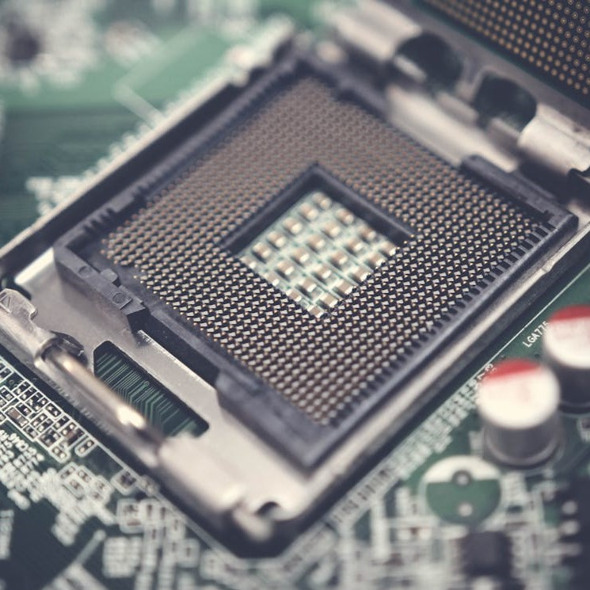

<!DOCTYPE html>
<html lang="en"></html>
<head>
    <meta charset="UTF-8">
    <meta name="viewport" content="width=device-width, initial-scale=1.0">
    <title>Document</title>
    <link rel="stylesheet" href="style2.css">
</head>
<body>
    
  <div id="wrapper">

        <header>

          <a href="index.html"> 
            <button type="button" class="block">  
              
            </button>
          </a>

        </header>
        <nav>
        <h2>

            <div class="dropdown">
              <button class="dropbtn">Meny</button>
              <div class="dropdown-content">
                <a href="chassi.html">Chassi</a>
                <a href="cpu.html">CPU</a>
                <a href="grafikkort.html">Grafikkort</a>
                <a href="hårddisk.html">Hårddisk</a>
                <a href="moderkort.html">Moderkort</a>
                <a href="nätaggregat.html">Nätaggregat</a>
                <a href="ram-minne.html">Ram Minne</a>
              </div>
            </div>

            <div class="dropdown">
              <button class="dropbtn2">Mycket skit</button>
              <div class="dropdown-content">
                Mycket för syns skull
              </div>
            </div>

            <div class="dropdown">
              <button class="dropbtn3">Mer skit</button>
              <div class="dropdown-content">
                Mer för syns skull
              </div>
            </div>

            <div class="dropdown">
              <button class="dropbtn4">Mest skit</button>
              <div class="dropdown-content">
                Mest för syns skull
              </div>
            </div>
            
         </h2>
        </nav>  
        <aside></aside>
        <main>
          <h3>
Processorn är centralenheten i datorn, typ hjärnan av operationen. Nudagens processor har många miljoner
transistorer. Transistorer är saker som utför kommandon med hjälp av att vara på eller av. Det motsvarar ettor
och nollor. Processorn ser ut att klara jättekomplexa kommandon, men det är inte fallet. Transistorna kan ju
bara vara ettor och nollor. Så det som egentligen händer är att den bryter ner den komplexa informationen till
lättare beräkningar och utför saker extremt snabbt, vilket ger illusionen att den kan räkna ut komplexa
handlingar. 
<P>En till sak, förutom mängden transistorer, som gör den så snabb är något som kallas klockfrekvens.
klockfrekvensen är hur många operationer den kan göra varje sekund, med andra ord så mäts den i hertz. 
Frekvensen på processorerna är uppe i GHz, en gigaherz. Det betyder att den kan göra flera miljarder beräkningar
varje sekund. De flesta processorer ligger på 2-4GHz. Man skulle i teorin kunna höja den frekvensen och göra
processorn ännu snabbare, men i praktiken blir det så varmt så det faktiskt skadar processorn. 
</P>
<p>
Så processorn lagrar operationerna den håller på med är med cache och ram minnet. Ram minnet går jag inte så
djupt in på här, men cache minnet är mer relevant. Cache minnet är ett extremt snabbt minne. Fantastikt! 
Varför har man inte cache minnen som hårddiskar då? Det är för att de är väldigt små minnen, bara några MB,
och det kostar multum att köpa. Cache minnet är väldigt användbart för att komma ihåg operationer som CPU:n
håller på med just nu, men det tas bort när beräkningen är klar. Blir cache minnet fullt så använder den sig
av ram-minnet. Den är lite långsamare, så det blir högre latens, men det brukar gå bra ändå.
</p>
          </h3>
        </main>
        <footer></footer>
        
  </div>
    
</body>
</html>